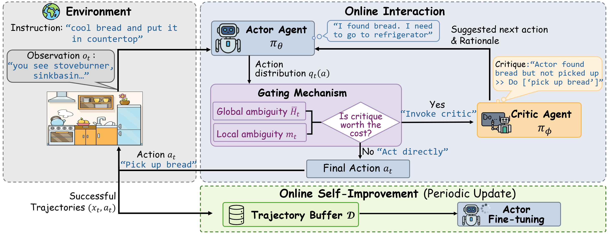
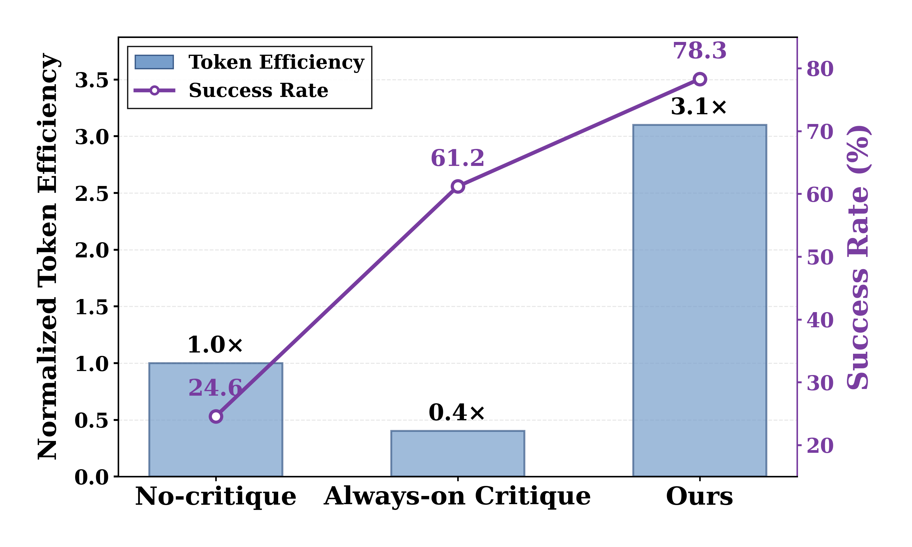
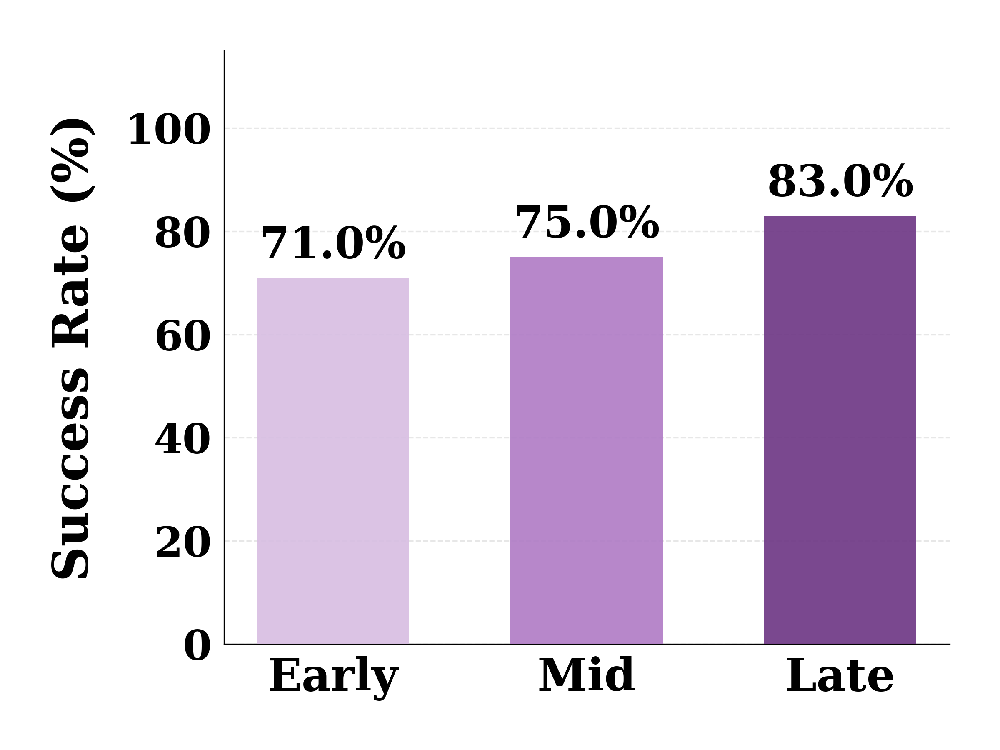
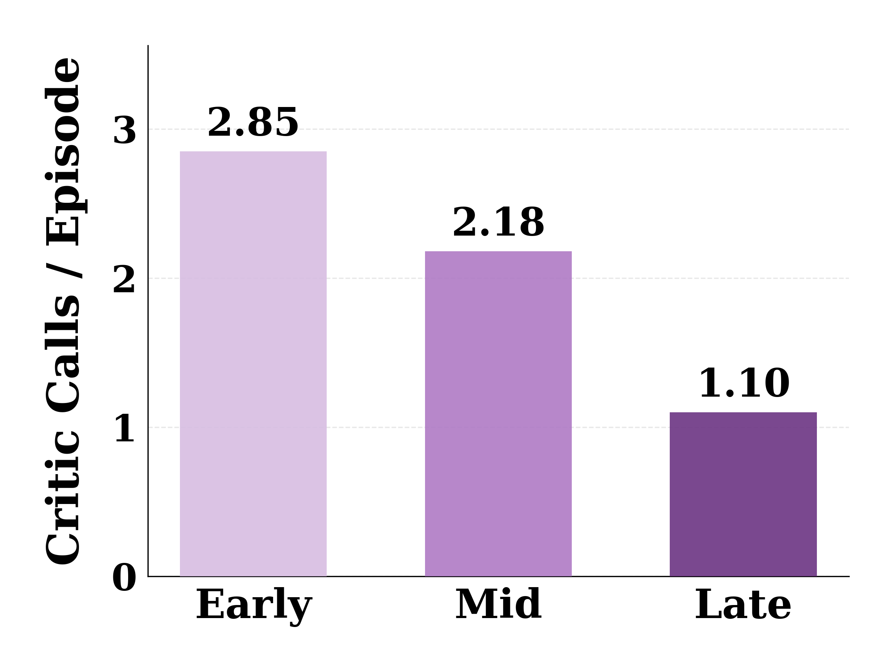
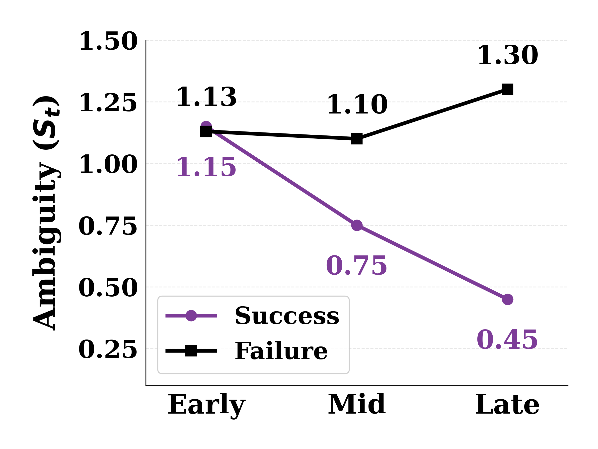
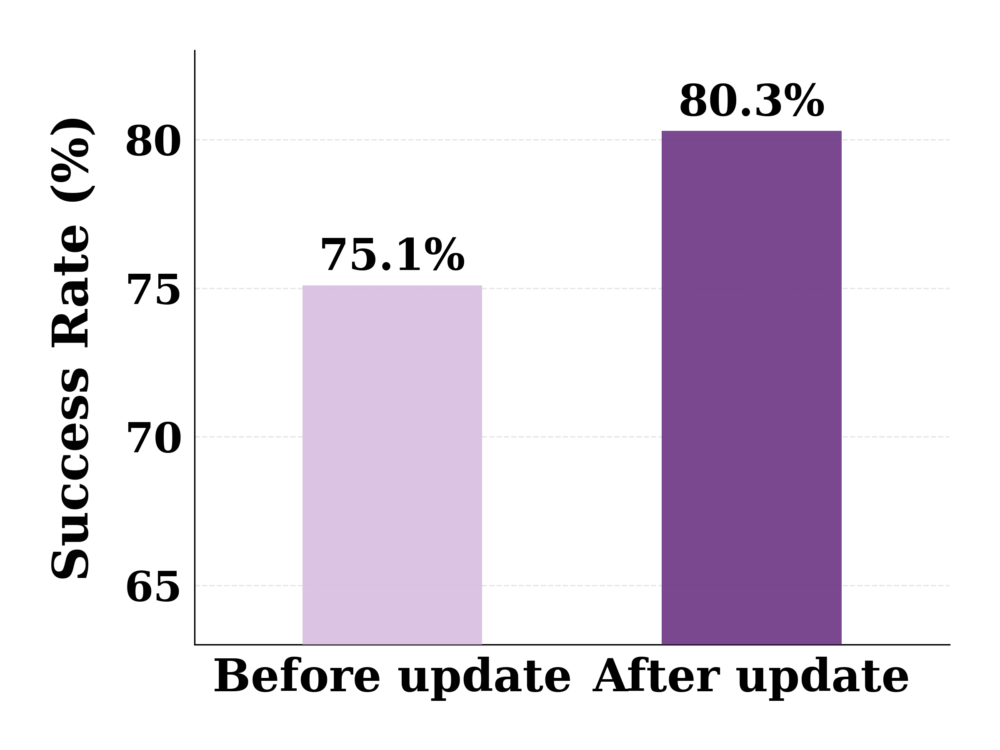

Large language model (LLM) agents in long-horizon interactive environments often rely on auxiliary critique to improve reliability, but invoking critique at every step (i.e., always-on critique) is computationally expensive and can severely reduce token efficiency. We propose SAG (Self-improving Agent with Gated critique), a cost-aware framework showing that selective critique is enough.
SAG treats critique invocation as a decision problem and queries a critic only when the expected benefit is likely to outweigh its cost. Because exact value-of-information (VoI) is intractable, SAG uses lightweight uncertainty proxies from the actor: global ambiguity (entropy) and local ambiguity (top-2 probability margin) over candidate actions. These signals drive a simple bounded gating rule that selectively triggers critique.
SAG further improves online by learning from successful interactions, allowing the actor to progressively reduce reliance on critique over time. Across long-horizon interactive benchmarks, SAG substantially improves the success–cost trade-off, matching or exceeding always-on critique while using a token budget comparable to a no-critique agent.


SAG achieves a strong success-cost trade-off, maintaining high success rates while using tokens efficiently. This enables performance comparable to always-on critique with a token budget close to no-critique agents.



SAG frames critique invocation as cost-sensitive decision-making. At each step, the agent evaluates whether the expected risk of error exceeds the cost of querying critique, and invokes the critic only when the decision rule favors intervention.
To support stable gating across dynamic action spaces, SAG derives uncertainty from the actor’s action distribution. Global ambiguity captures overall uncertainty (normalized entropy), while local ambiguity captures fine-grained confusion among top candidates (e.g., a small margin between the top-1 and top-2 actions).
SAG stores successful trajectories (especially those improved by critique) and periodically fine-tunes the actor on these interactions. This enables the actor to internalize effective behaviors and gradually reduce dependence on critique during subsequent episodes.
SAG uses a fixed gate threshold and a margin threshold for local ambiguity, and performs periodic online SFT using a buffer of successful interactions. (You can edit this block to match your final camera-ready hyperparameters.)
| Method | Succ ↑ | #Horizon ↓ | #Token ↓ | Eff ↑ | Succ ↑ | #Horizon ↓ | #Token ↓ | Eff ↑ | Succ ↑ | #Horizon ↓ | #Token ↓ | Eff ↑ |
|---|---|---|---|---|---|---|---|---|---|---|---|---|
| ReAct (Basic) | 24.6 | 15.8 | 55 | 1.00 | 36.0 | 7.4 | 55 | 1.00 | 11.0 | 6.3 | 12 | 1.00 |
| Reflexion (Deliberation) | 40.3 | 16.3 | 150 | 0.60 | 41.0 | 7.0 | 162 | 0.39 | 11.5 | 6.8 | 15 | 0.81 |
| Debate (Deliberation) | 31.3 | 14.3 | 389 | 0.18 | 52.0 | 8.9 | 441 | 0.18 | 20.0 | 4.7 | 90 | 0.24 |
| CER (Deliberation) | 60.5 | 16.4 | 210 | 0.64 | 45.0 | 8.0 | 239 | 0.29 | 16.0 | 5.1 | 11 | 1.50 |
| Traj-Boost (Deliberation) | 56.0 | 12.9 | 272 | 0.46 | 44.0 | 10.0 | 85 | 0.80 | 24.5 | 5.1 | 12 | 2.19 |
| Retrospex (Critic) | 70.2 | 10.5 | 94 | 1.67 | 42.0 | 9.5 | 50 | 1.30 | 20.0 | 5.9 | 6 | 3.58 |
| LAC (Critic) | 61.2 | 14.2 | 339 | 0.40 | 47.0 | 10.5 | 436 | 0.17 | 25.0 | 6.5 | 82 | 0.32 |
| Ours (SAG) (Critic) | 78.3 | 11.4 | 56 | 3.10 | 70.0 | 8.1 | 78 | 1.38 | 37.0 | 5.8 | 9 | 4.55 |
Removing either global or local ambiguity degrades performance, while always-on critique incurs substantially higher token cost.
| Global | Local | Variant | Succ ↑ | #Horizon ↓ | #Token ↓ |
|---|---|---|---|---|---|
| ✓ | ✓ | Full (SAG) | 78.3 | 11.4 | 56 |
| ✗ | ✓ | w/o global ambiguity | 77.6 | 12.1 | 51 |
| ✓ | ✗ | w/o local ambiguity | 74.6 | 11.4 | 52 |
| ✗ | ✗ | Always (no gating) | 62.0 | 17.4 | 112 |
| ✗ | ✗ | w/o critic | 53.0 | 17.3 | 55 |
You are in the middle of a room. Looking quickly around you, you see an armchair 1, a cabinet 4, a cabinet 3, a cabinet 2, a cabinet 1, a drawer 5, a drawer 4, a drawer 3, a drawer 2, a drawer 1, a dresser 1, a garbagecan 1, a safe 1, a shelf 12, a shelf 11, a shelf 10, a shelf 9, a shelf 8, a shelf 7, a shelf 6, a shelf 5, a shelf 4, a shelf 3, a shelf 2, a shelf 1, a sidetable 1, and a sofa 1. Your task is to: put two pillow in sofa. > [Agent] Act 1: think: To solve the task, I need to find and take the first pillow, then put it in sofa, then find and take the second pillow, then put it in sofa. OK. > [Agent] Act 2: think: First I need to find the first pillow. A pillow is more likely to appear in armchair (1), cabinet (1-4), drawer (1-5), dresser (1), sidetable (1), sofa (1). I can check one by one, starting with armchair 1. OK. > [Agent] Act 3: go to armchair 1 You arrive at armchair 1. On the armchair 1, you see a cellphone 2, a pillow 2, and a pillow 1. > [Agent] Act 4: take pillow 1 from armchair 1 You pick up the pillow 1 from the armchair 1. > [Agent] Act 5: think: Now I find the first pillow (1). Next, I need to put it in sofa 1. OK. > [Agent] Act 6: go to sofa 1 You arrive at sofa 1. On the sofa 1, you see a newspaper 3.
> [Gate] global ambiguity H̄t = 0.20, local margin mt = 0.06 < δ > [Gate] score St = H̄t + I[mt < δ] = 1.20 > τ (VoI proxy > cost) ⇒ critic invoked > [Critic] Suggested action: move pillow 1 to sofa 1 > [Critic] Rationale: You are close, but you forgot to put the first pillow in the sofa before searching for the second one. Putting the first pillow in the sofa now reduces the risk of forgetting it later.
> [Agent] Act 7: move pillow 1 to sofa 1 On the sofa 1, you see a newspaper 3, and a pillow 1. > [Agent] Act 8: go to armchair 1 You arrive at armchair 1. On the armchair 1, you see a cellphone 2, and a pillow 2. > [Agent] Act 9: take pillow 2 from armchair 1 You pick up the pillow 2 from the armchair 1. > [Agent] Act 10: think: Now I find the second pillow (2). Next, I need to put it in sofa 1. OK. > [Agent] Act 11: go to sofa 1 You arrive at sofa 1. On the sofa 1, you see a newspaper 3, and a pillow 1. > [Agent] Act 12: move pillow 2 to sofa 1 You move the pillow 2 to the sofa 1. Outcome: success
> [SAG] Successful episode. Trajectory is added to the self-improvement buffer.